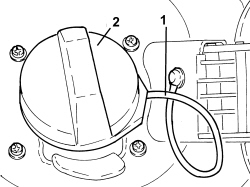

1040A40 PLUG FOR FUEL FILLER PIPE - R + R
- Path
- Procedures > 10 ENGINE > 1040 FUEL TANK AND PIPES > 1040A FUEL TANK AND COMPONENTS > 1040A40 PLUG FOR FUEL FILLER PIPE - R + R
- Kind
- repair procedure (removal / refitting; the operation number is the code)
- Applies to
- engines: 1.9 JTS, 2.2 JTS, 3.2 JTS, 1.9 JTD 8V, 1.9 JTD 16V, 2.4 JTD 20V; all production periods
- Interactive page
- https://sloeber94.github.io/elrnDB/alfa/159/en/#/939010495
Applies to: engines: 1.9 JTS, 2.2 JTS, 3.2 JTS, 1.9 JTD 8V, 1.9 JTD 16V, 2.4 JTD 20V; all production periods
 Removing
Removing
 Refitting
Refitting- Open the fuel filler cap access flap.
1. Release the cap safety device for the fuel filler pipe from the body.
2. Unscrew the fuel filler pipe cap and remove.

Applies to: engines: 1.9 JTS, 2.2 JTS, 3.2 JTS, 1.9 JTD 8V, 1.9 JTD 16V, 2.4 JTD 20V; all production periods
Refitting
Removing- Place the fuel filler pipe cap in its housing and tighten it.
- Secure the cap safety device for the fuel filler pipe to the body.
- Close the fuel filler cap access flap.